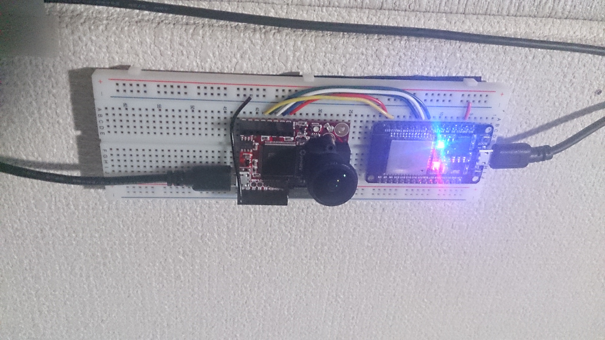
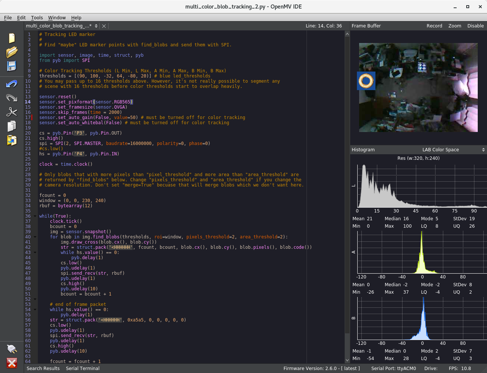
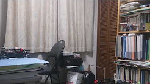
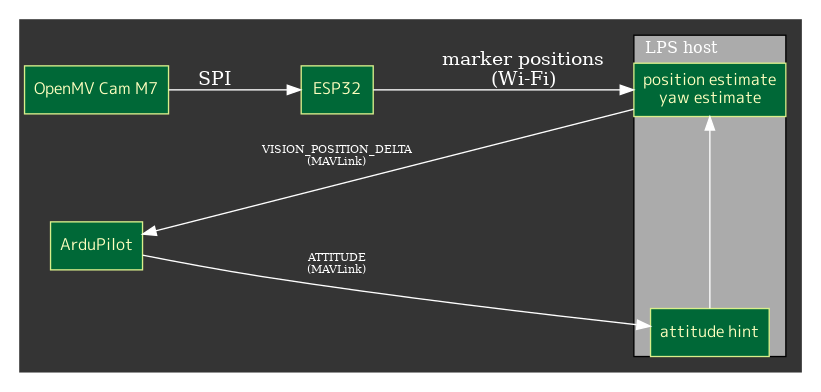
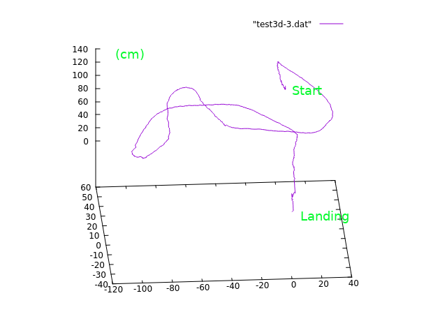
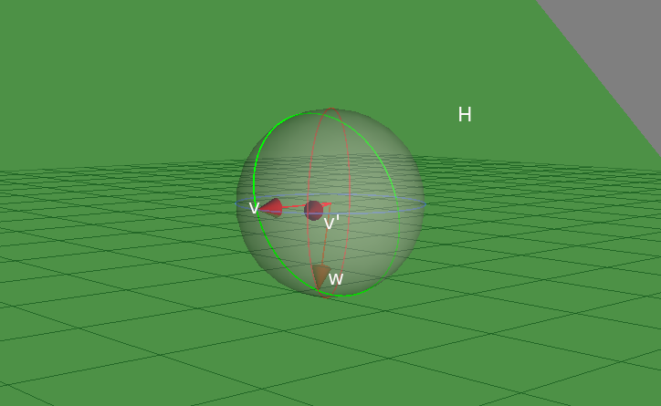
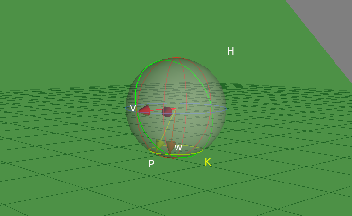

Screen shot of opemMV IDE

I've tried to make a simple and budget local positioning system with openMV cam for the indoor flight of tiny copter.
Looks not so good precision but not so bad as a Poor Man's system. A LOITER and LAND flight test with my hachidori copter is here:

where only throttle work is done.
System is simple

OpenMV cam with fish-eye lens has been set at the ceiling and it tracks LED markers mounted on the copter. The tracking data is sent to the host PC via ESP32 connected to openMV cam as a SPI slave device. The host PC also connects to the telemetry port of ArduCopter and is getting ATTITUDE packets and estimates the position and heading with the visual markers and ATTITUDE information.
The result of estimations are sent back to the telemetry port with VISION_POSITION_DELTA packets.
Currently, openMV data rate is 40-50fps, ATTITUDE rate 20Hz and VISION_POSITION_DELTA rate is same with cam.
The coordinate of marker on image sensor is converted to the 3D direction from cam and the height is estimated with the distance of markers and the attitude. I'm using geometric algebra in very primitive way to compute them. Kalman filter is applied for smoothing.
Here is a test result of 3D positions got when moving the copter by hand.

visual yaw estimation
Unfortunately yaw angles based on the compass of the copter are too unreliable in my case. The copter uses coreless motors which can easily break compass measuring and there are many other problematic magnetic sources in my room. The visual yaw estimation is used instead.
When the pitch angle isn't zero, the direction seen from cam and the real horizontal direction differs. The figure below represents this situation:

where w is the real heading vector and v is the vector can be seen as the horizontal direction from cam. w = (v' rotated with pitch angle) and H is a plane including v, w and cam. A simple geometric algebra computation helps again.

This figure shows that computation in geometric algebra. Essentially, vector w can be obtained as the one of the point pair which is the "meet" of the yellow circle K and the green plane H. The corresponding program is fairly straightforward. See host program for details. Of course, rotation matrices or spherical angles can be used for that computation.
All programs for openMV, ESP32 and the host PC are in my github, though they are experimental.
Happy Hacking,